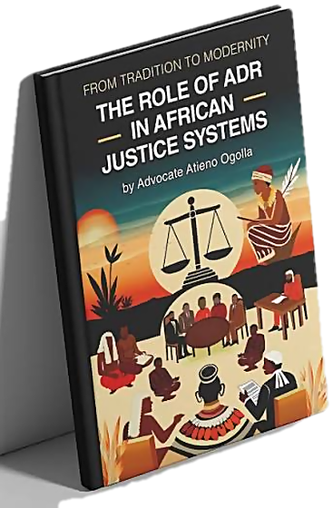
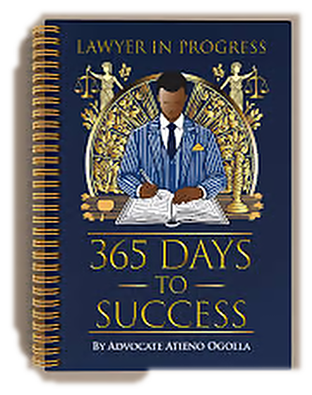

20—
The First Step
Enrolled to read law, where a lifelong sense of justice first found its language.
A Voice With Purpose
Advocate. Writer. Founder. A legal mind using the law — and the written word — to give voice to the unheard.
The Journey
Scroll to walk the hall ↓
20—
Enrolled to read law, where a lifelong sense of justice first found its language.
20—
Admitted to the profession and took the first briefs that would define a career.
20—
Built a practice across [your practice areas], representing clients with diligence and heart.
20—
Published the first book — turning lived cases and convictions into pages others could hold.
20—
Founded [your venture], extending the mission beyond the courtroom.
Today
Advocacy, authorship and enterprise, carried as one practice.
The Professional
Today, Atieno practises with a focus on [your practice areas] — pairing careful legal reasoning with a writer's gift for making the complex plain. [Replace this paragraph with a short note on your current role and the work you are proudest of.]
The Enterprise
Ventures where the same purpose takes new form — [replace with a line about your entrepreneurial work].
[Your chambers or firm] — client advisory, representation and counsel grounded in diligence.
Learn moreBooks, essays and the written voice — [describe your authorship and publishing work].
See the libraryTalks, training and mentorship for the next generation — [describe your speaking work].
Invite meReflections
The law gives us rules; faith gives us reasons. I try to practise where the two meet.
Reflection No. 01
Every brief I write begins the way a prayer does — with listening.
Reflection No. 02
Purpose is not found in the verdict, but in whose voice you chose to carry.
Reflection No. 03
The Library
Four books by Advocate Atieno Ogolla — on justice, faith and the road to the Bar.


Get in touch
For briefs, books, talks or collaboration — [replace with a warm invitation to connect].